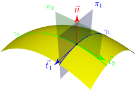

5 Courbure des surfaces
\[ \DeclareMathOperator{\asym}{\symbfsf{asym}} \newcommand{\altvec}[1]{\overrightarrow{#1}} \newcommand{\D}{{\mathrm d}} \newcommand{\dbldot}{\mathbin{\mathord{:}}} \let\div\undefined \newcommand{\div}{\operatorname{div}} \newcommand{\tdiv}{\operatorname{\symbfsf{div}}} \newcommand{\Div}{\operatorname{Div}} \newcommand{\external}{\mathrm{ext}} \newcommand{\Eta}{\mathrm{H}} \newcommand{\Grad}{\operatorname{Grad}} \newcommand{\grad}{\operatorname{grad}} \newcommand{\tgrad}{\operatorname{\symbfsf{grad}}} \newcommand{\tGrad}{\operatorname{\symbfsf{Grad}}} \newcommand{\internal}{\mathrm{int}} \newcommand{\KL}{\mathrm{KL}} \newcommand{\kl}{\mathrm{kl}} \newcommand{\PI}{\symup{\pi}} \newcommand{\point}[1]{\symsf{#1}} \newcommand{\power}{\mathcal{P}} \newcommand{\reals}{\mathbb R} \newcommand{\Span}{\operatorname{Vect}} \newcommand{\sym}{\operatorname{\symbfsf{sym}}} \newcommand{\tens}[1]{\symbfsf{#1}} \newcommand{\tr}{\operatorname{tr}} \newcommand{\transpose}{\mathsf{T}} \renewcommand{\vec}[1]{\symbf{#1}} \]
Dans ce chapitre, on introduit les notions fondamentales suivantes : surface paramétrée, base locale naturelle, vecteur normal, tenseur identité du plan tangent, tenseur antisymétrique fondamental, tenseur de courbure. Ces notions seront utilisées dans les chapitres suivants pour construire la théorie des coques de Kirchhoff–Love.
5.1 Plans de l’espace
5.2 Surfaces paramétrées
5.3 Courbure des surfaces
5.3.1 Tenseur de courbure
Soient \(\point{m}\) un point régulier d’une surface \(ς\) et \(\vec{t}\) un vecteur unitaire, tangent à \(ς\) en \(\point{m}\). Le point \(\point{m}\) et les vecteurs \(\vec{t}\) et \(\vec{n}(\point{m})\) définissent un plan \(π\) qui rencontre la surface \(ς\) le long de la courbe \(γ\) (voir Figure 5.1). Cette courbe est une courbe plane, puisqu’elle est par construction contenue dans le plan \(π\). Sa courbure en \(\point{m}\) est donc une notion connue (voir § A.2).

Si la surface \(ς\) est suffisamment régulière en \(\point{m}\), alors on il existe un tenseur \(\tens{b}(\point{m})\) tel que la courbure de \(γ\) au point \(\point{m}\) soit donnée par l’expression : \(\vec{t} ⋅ \tens{b}(\point{m}) ⋅ \vec{t}\). Le tenseur \(\tens{b}(\point{m})\) ainsi introduit est le tenseur de courbure de la surface \(ς\) au point \(\point{m}\). C’est un tenseur du plan tangent en \(\point{m}\), symétrique.
Pour établir l’existence du tenseur \(\tens{b}\) au point \(\point{m} ∈ ς\), on considère une représentation cartésienne locale \((x, y) \mapsto g(x, y)\) de la surface au voisinage de \(\point{m}\). Ainsi tout point \(\point{m}'\) suffisamment proche de \(\point{m}\) sur \(ς\) s’écrit \[ \point{m}' = \point{m} + x \, \vec{e}_x + y \, \vec{e}_y + g(x, y) \, \vec{e}_z ∈ ς, \] où \((\vec{e}_x, \vec{e}_y)\) désigne une base orthonormée du plan tangent \(\mathcal{T}(\point{m}, ς)\) et \(\vec{e}_z = \vec{n}\). Tout point \(\point{m}'\) du plan \(π\) peut par ailleurs s’écrire \[ \point{m}' = \point{m} + r \, \vec{t} + z \, \vec{e}_z = \point{m} + r \, t_x \, \vec{e}_x + r \, t_y \, \vec{e}_y + z \, \vec{e}_z ∈ π. \] Un point \(\point{m}'\) de la courbe \(γ\) doit safisfaire simultanément les représentations précédentes. On en déduit la représentation paramétrique de \(γ\) au voisinage de \(\point{M}\) \[ x = r \, t_x, \quad y = r \, t_y \quad \text{et} z = g(r \, t_x, r \, t_y), \] où le (petit) paramètre est \(r\). Les dérivées premières de \(g\) étant nulles, on obtient à l’ordre le plus bas en r \[ z = g(r \, t_x, r \, t_y) = \frac{r^2}{2} \, \bigl[ t_x^2 \, ∂_{xx}^2 g(0, 0) +2t_x \, t_y \, ∂_{xy}^2g(0, 0) + t_y^2 \, ∂_{yy}^2g(0, 0) \bigr] + o\bigl( r^2 \bigr). \tag{5.1}\]
Soit \(\tens{b}\) la hessienne de \(g\) à l’origine \[ \tens{b} = ∂_{αβ}^2 g(0, 0) \, \vec{e}_α ⊗ \vec{e}_β. \]
Le tenseur \(\tens{b}\) ainsi défini est un tenseur du plan tangent \(\mathcal{T}(\point{m}, ς)\), symétrique. De plus, l’équation (5.1) se met sous la forme \[ z = \frac{r^2}{2} \, \vec{t} ⋅ \tens{b} ⋅ \vec{t} + o\bigl( r^2 \bigr). \]
On reconnaît, dans la base cartésienne \((\vec{t}, \vec{e}_z)\) du plan \(π\), l’équation d’une parabole et le terme en \(r^2 / 2\) correspond à la courbure au sommet de cette parabole (soit, au point \(\point{m}\)). On a donc bien mis la courbure de \(γ\) en \(\point{m}\) sous la forme \(\vec{t} ⋅ \tens{b} ⋅ \vec{t}\), où \(\tens{b}\) est la hessienne de \(g\) à l’origine.
Le tenseur de courbure \(\tens{b}\) a été construit ici dans un système de coordonnées curviligne très particulier. Pour conclure cette démonstration, il faut montrer que ce tenseur est bien intrinsèque, c’est-à-dire indépendant de la représentation paramétrique de \(ς\). C’est en fait immédiat, puisque \(\tens{b}\) relie le vecteur unitaire du plan tangent \(\vec{t}\) à la courbure \(\vec{t} ⋅ \tens{b} ⋅ \vec{t}\) d’une courbe plane, ces objets étant eux-mêmes définis de façon intrinsèque. On écrira donc \(\tens{b}(\point{m})\) et pas \(\tens{b}(ξ, η)\) pour désigner le tenseur de courbure au point \(\point{m}\) de \(ς\).
5.3.2 Courbures principales et classification des points réguliers
Le tenseur de courbure \(\tens{b}\) étant symétrique, il est diagonalisable dans une base orthonormée du plan tangent \(\mathcal{T}(\point{m}, ς)\) et on peut introduire les courbures principales \(b_{\mathrm{I}}\) et \(b_{\mathrm{II}}\), qui sont les valeurs propres de ce tenseur. On conviendra d’ordonner ces valeurs propres de façon à ce que \(b_{\mathrm{I}} \leq b_{\mathrm{II}}\). Les courbures principales sont les valeurs extrêmes de la courbure en \(\point{m}\) de la courbe plane \(γ\) introduite ci-dessus.
Pour montrer ce résultat, on introduit les directions principales de courbure \(\vec{t}_{\mathrm{I}}\) et \(\vec{t}_{\mathrm{II}}\) (vecteurs unitaires orthogonaux), de sorte que \[ \tens{b} = b_{\mathrm{I}} \, \vec{t}_{\mathrm{I}} ⊗ \vec{t}_{\mathrm{I}} + b_{\mathrm{II}} \, \vec{t}_{\mathrm{II}} ⊗ \vec{t}_{\mathrm{II}}. \]
Les vecteurs \(\vec{t}_{\mathrm{I}}\) et \(\vec{t}_{\mathrm{II}}\) forment une base orthonormée, dans laquelle on peut décomposer le vecteur \(\vec{t}\) : \(\vec{t} = \cos θ \, \vec{t}_{\mathrm{I}} + \sin θ \, \vec{t}_{\mathrm{II}}\). La courbure de \(γ\) en \(\point{m}\) a donc pour expression \[ \vec{t} ⋅ \tens{b} ⋅ \vec{t} = \cos^2 θ \, b_{\mathrm{I}} + \sin^2 θ \, b_{\mathrm{II}}, \] dont les valeurs extrêmes sont bien obtenues pour \(θ=0\) (\(\vec{t} = \vec{t}_{\mathrm{I}}\)) ou \(θ = π/2\) (\(\vec{t} = \vec{t}_{\mathrm{II}}\)).
Comme pour une courbe plane, le signe des courbures principales dépend de l’orientation de \(ς\) (de la normale \(\vec{n}\)). Les produits \(b_{\mathrm{I}} \, \vec{n}\) et \(b_{\mathrm{II}} \, \vec{n}\) sont quant à eux intrinsèques et indiquent de quel côté la surface oriente sa courbure. En effet les deux centres de courbure associés aux courbures principales sont situé en \(\point{m} + \vec{n} / b_{\mathrm{I}}\) et \(\point{m} + \vec{n} / b_{\mathrm{II}}\).
Sphère, cylindre.
On peut introduire une classification des points réguliers \(\point{m}\) d’une surface en fonction des signes des courbures principales \(b_{\mathrm{I}}\) et \(b_{\mathrm{II}}\).
- Si \(b_{\mathrm{I}} \, b_{\mathrm{II}} > 0\) (courbures principales non-nulles et de même signe), le point \(\point{m}\) est dit elliptique.
- Si \(b_{\mathrm{I}} \, b_{\mathrm{II}} < 0\) (courbures principales non-nulles et de signes contraires), le point \(\point{m}\) est dit hyperbolique.
- Si l’une seulement des deux courbures principales est nulle, le point \(\point{m}\) est parabolique.
- Si les deux courbures principales sont nulles, le point \(\point{m}\) est un méplat.
- Si les deux courbures principales sont égales et non-nulles, le tenseur de courbure est diagonal et la courbure de la courbe \(γ\) est indépendante du vecteur \(\vec{t}\) ; le point \(\point{m}\) est un point ombilic.
5.3.3 Courbure moyenne, courbure gaussienne
Les courbures moyenne \(h\) et gaussienne \(k\) de la surface sont définies à partir des courbures principales \(b_{\mathrm{I}}\) et \(b_{\mathrm{II}}\) \[ h = \tfrac{1}{2} \, \bigl( b_{\mathrm{I}} + b_{\mathrm{II}} \bigr) \quad \text{et} \quad k = b_{\mathrm{I}} \, {b_\mathrm{II}}. \]
Le tenseur de courbure \(\tens b\) est un tenseur du plan tangent \(\mathcal{T}(\point{m}, ς)\) : il peut donc être considéré comme le représentant d’un endomorphisme de \(\mathcal{T}(\point{m}, ς)\) (espace vectoriel de dimension 2). Les courbures moyenne et gaussienne apparaissent alors comme les invariants de \(\tens{b}\) \[ h = \tfrac{1}{2} \tr \tens{b} \quad \text{et} \quad k = \det_{2 × 2} \tens{b} = \det_{3 × 3} \bigl( \tens{b} + \vec{n} ⊗ \vec{n} \bigr) \] (les notations \(\det_{2 × 2}\) et \(\det_{3 × 3}\) sont précisées dans l’annexe § B.1). Le point \(\point{m}\) de la surface \(ς\) est elliptique, parabolique ou hyperbolique si la courbure gaussienne est positive, nulle ou négative, respectivement. Par ailleurs, le théorème de Cayley–Hamilton permet d’écrire que \(\tens{b}\) annule son polyôme caractéristique \[ \tens{b} ⋅ \tens{b} - 2h \, \tens{b} + k \, \tens{a} = \tens{0}. \]